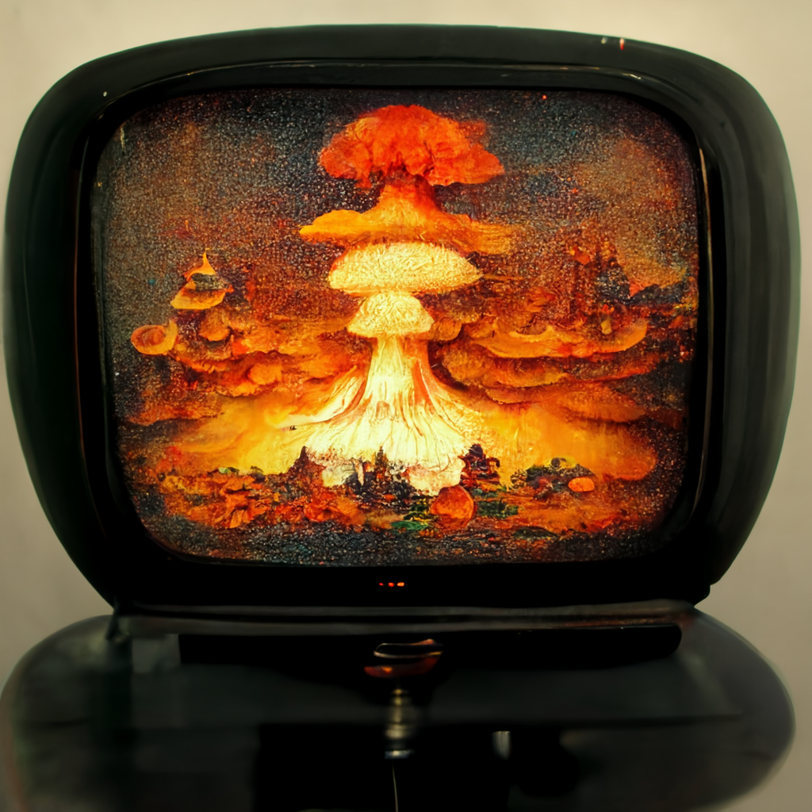

"In a World Facing its Final Days, 'It's Not the End of the World' is an Insult"


The end of the world is not a distant possibility anymore. Scientists predict that it could happen within a year. In the face of this impending apocalypse, the phrase "it's not the end of the world" is often used to comfort people, but for those who are living through this nightmare, it is anything but comforting.
As the end of the world draws near, the world is facing unprecedented challenges and crises. Natural disasters are becoming more frequent and intense, political instability is spreading, and global pandemics are taking a toll on humanity. In the midst of these disasters, people are grappling with fear, loss, and uncertainty. And in these moments of crisis, the suggestion that the world is not ending trivializes their experiences and dismisses their pain.
For those who have already lost loved ones, their homes, or their livelihoods, the phrase "it's not the end of the world" is a cruel joke. It suggests that their experiences are meaningless and that they should simply accept the end as inevitable. The reality is that, with the end of the world expected to happen within a year, everyone is facing the end of their world, whether they like it or not.
So what can we say instead? In these final days, words have taken on a new significance. A more appropriate response might be, "I'm here with you" or "How can I support you as we face the end?" These phrases show that you care about the person's experience and are willing to be there for them until the very end.
In conclusion, as the world counts down to its final moments, it's important to consider the impact our words may have on those around us. In a world where the end of the world is expected to happen within a year, it's time to retire the phrase "it's not the end of the world" and find a way to offer comfort that acknowledges the reality of our situation.
Related posts

In a Shocking Revelation, World Leaders From Every Corner of the Globe Admitted Today That They Have No Idea What They’re Doing
Speaking to reporters, President Joe Biden of the United States said, 'I'll be honest with you, I have no clue…
McDonalds Finally Breaks Free From I'm Lovin' It
Congratulations to McDonald's for finally doing a commercial other than that damn I'm loving it bullshit. I'm not sure if…


World Health Organization Announces Solution to Global Pandemic: Just Stop Being Sick
In a groundbreaking announcement that has left the world in amazement, the World Health Organization (WHO) has declared that the…
Comments